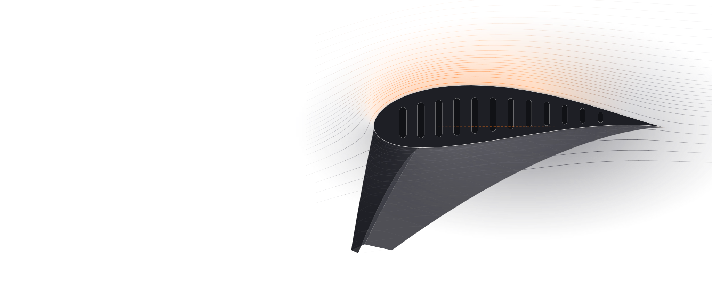

How a Paraglider Actually Flies
Stability, collapses, certification and control, explained by the people who design, test and teach it.
Eight conversations. Why a wing with no tail stays stable, what really makes it collapse, what an EN letter can and cannot tell you, and how to read the air you climb in.
The eight conversations
Open any tile for chapters, quotes and links Tom Lolies Explains The Science Of Wing Design and Evolution from ENC to CSC12 chapters
Episode 3280 min
Tom Lolies Explains The Science Of Wing Design and Evolution from ENC to CSC12 chapters
Episode 3280 min Modernizing SIV Courses: How This New Training Method Can Help You Master Glider Control and Improve Paragliding SafetyHelmut Schrempf10 chapters
Episode 3796 min
Modernizing SIV Courses: How This New Training Method Can Help You Master Glider Control and Improve Paragliding SafetyHelmut Schrempf10 chapters
Episode 3796 min The Science of EN Certifications: How Work Group 6 Shaped Paragliding Testing, Innovation & SafetyAlain Zoller13 chapters
Episode 5257 min
The Science of EN Certifications: How Work Group 6 Shaped Paragliding Testing, Innovation & SafetyAlain Zoller13 chapters
Episode 5257 min
 Luc Armant talks about Debunking the Myths and Upgrading Enzo 38 chapters
Episode 3994 min
Luc Armant talks about Debunking the Myths and Upgrading Enzo 38 chapters
Episode 3994 min Paragliding’s Slovenian Mavericks Redefining the EN B Class And Elevating Free Flight PerformanceAljaž Valič13 chapters
Episode 8073 min
Paragliding’s Slovenian Mavericks Redefining the EN B Class And Elevating Free Flight PerformanceAljaž Valič13 chapters
Episode 8073 min How to Thermal Like a Pro: Find, Center & Climb | Paragliding Tutorial with Brett Janaway13 chapters
Episode 7921 min
How to Thermal Like a Pro: Find, Center & Climb | Paragliding Tutorial with Brett Janaway13 chapters
Episode 7921 min Luc Armant talks about The Moment Coefficient, Enzo 3 Certification Debate & Physics of Stability5 chapters
Luc Armant talks about The Moment Coefficient, Enzo 3 Certification Debate & Physics of Stability5 chapters
Stability comes from the profile, not from you
A paraglider has no tail. Everything that keeps it stable in pitch is built into the profile shape, and every design choice trades that stability against speed.
Read more
A paraglider has no tail, so every bit of its pitch stability comes from the shape of the profile. Luc Armant of Ozone explains it through the moment coefficient: on a stable profile, as the angle of attack drops the lift resultant moves forward and resists the pitch-down, while a profile with a lower moment coefficient carries its lift further back, gives more speed for a given amount of speed-bar travel, and gives up resistance to collapse in exchange.
Tom Lolies, designing for Skywalk, describes the same physics from the bench as pitch-up tendency: the newer airfoils that, when the lines go slack in a gust, want to pitch against the collapse rather than with it, so the pilot feels the tension drop and has time to react instead of getting the whole thing at once.
What a test report cannot tell you
A test report shows how a wing behaves after it collapses. It cannot tell you how hard the wing is to collapse, which is the thing you actually care about.
Read more
That is why a certification report is a narrower document than most buyers assume. Alain Zoller, who runs the Air Turquoise test house and sits on the Work Group 6 that writes the standard, says a class does not make one wing better than another, only better matched to a pilot, and that the collapses induced in testing are not representative of what turbulence does.
Tom Lolies goes further: the standard has around twenty tests for how a wing behaves once it has collapsed and effectively none for how hard it is to collapse, so a page of A results can mean a beautifully behaved wing, or one that folds so easily that nothing dramatic ever happens. Luc Armant's buying advice is the same from Ozone's side: ignore any single letter and read who the manufacturer says the wing is for.

When a gust drops the angle of attack, a modern profile moves its lift forward onto the A lines and pitches back against the collapse. You feel the tension go before anything folds.
Tom Lolies, designer at Skywalk Episode 66, paraphrased
Potential-flow sketch: faster, lower-pressure air over the top in orange; slower air underneath in grey.
The small-brake problem
On a modern, stable profile a little brake is worse than none: it cancels the stability without adding the drag. Fly on the Bs, or use plenty of brake.
Read more
On the control side, Tom Lolies and the SIV coach Helmut Schrempf arrive at the same warning about the modern, more stable profiles: a small amount of brake is the worst input you can give them, because it deflects the trailing edge enough to kill the pitch-up tendency without adding enough drag to slow the wing. Fly hands-up on the B risers or the C steering, or use a lot of brake when you need it, but not a little.
Bryan Van Ostheim describes the extreme version on a reflex parakite: a light brake input during a surge removes the reflex, and the whole wing can fold. His advice is to do nothing and let the reflex work, or pull a lot, never a little.
After Tom Lolies, Episode 66, chapter 12, and Helmut Schrempf, Episode 32. Orange: where the lift acts. Grey: drag.
Reading the air
Thermals need contrast and triggers, not heat, and the strongest air sits at the upwind front of the bubble. With no other information, turn into wind.
Read more
Brett Janaway covers the air itself. Thermals need contrast and triggers more than heat, which is why Slovenia works in December and a desert often does not. The strongest air sits at the upwind front of the bubble, because the hottest air rises most steeply for the same drift, so you keep pushing into wind or slide out of the back.
With no other information, turn into wind when you hit lift. The one exception he gives is an inversion: there the thermal is usually downwind of you, rising slowly through the lid, not upwind.
After Brett Janaway, Episode 80, chapters 5 and 7. Wind blows left to right.
Worth remembering
Each one links to the chapter where it is saidCheck your brake length
Dyneema brake lines shrink, pilots adapt without noticing, and brakes that end up too short are a cofactor in accidents. Measure them regularly, and have the wing checked if you have any doubt.
Tom Lolies Does brake input prevent collapsesThe wing
The profile does the stabilising
A paraglider has no tail. The moment coefficient sets where the lift sits, and a 14 cm speed-bar cap pushes race wings toward instability.
Luc Armant Pitch stability without a tailSlack B lines at full speed
The lift has moved forward onto the A lines, a sign of a collapse-resistant airfoil. One green flag among several, not a rule.
Tom Lolies The green flags to look for in a wingA results are not a safety score
Reports show how collapses went, never how easily they happen. A pitch-unstable wing can score well because it folds so readily.
Tom Lolies Reading a test report properlyYour inputs
The B risers stall sooner
With less pressure and less warning than the brakes. To slow down hard in turbulence, go to deep brake, then back to the Bs.
Tom Lolies Can every collapse be caught on the B lineRelease into the drop
When a side drops, let the tension out of your hip on that side. Pressing in gives the wing the wrong amount and starts the rolling.
Helmut Schrempf Anticipating collapses on a stable wingTurn into wind
The core sits upwind. Wrong at the front and you fall back into it; wrong at the back and you are sinking and chasing it.
Brett Janaway Which way to turn with no informationYour choices
Wings drift out of trim
Usually slower, and unevenly if you always spiral one way. Regular checks keep it safe, and a missed one can void the warranty.
Alain Zoller Can certification change once the trim driftsStepping down is fine
Match the wing to how much and how often you fly. Even a Skywalk designer goes back to a low B after a break.
Tom Lolies Whether to change category or stay putQuestions these conversations answer
Each answer links to the chapter of the episode where the guest says it.
Why is a paraglider stable in pitch when it has no tail?
Because the stability is built into the profile. Luc Armant explains that a profile has a moment coefficient: on a stable one, as the angle of attack falls the lift resultant moves forward, which pulls the nose back up. A profile with a low moment coefficient carries its lift further back and is easier to accelerate, but resists collapse less.
Luc Armant Pitch stability without a tailWhat is pitch-up tendency in a paraglider?
Tom Lolies describes it as an airfoil that, when the angle of attack drops, moves its centre of lift towards or beyond the nose, so the wing wants to pitch against a collapse rather than with it. The pilot feels a loss of tension before anything folds and has time to react. Older profiles tended the other way and collapsed completely and quickly.
Tom Lolies Brake pressure, and the approach to a stallDoes EN certification tell me how likely a wing is to collapse?
No. Alain Zoller, who runs a test house, says the induced collapses are not representative of what the air does. Tom Lolies adds that the standard has roughly twenty tests for behaviour after a collapse and no accepted test for collapse resistance; the only one, brake application at full speed, is itself debated.
Tom Lolies and Alain Zoller The green flags to look for in a wingHow should I read a paraglider test report before buying?
Do not use it to rank wings. Luc Armant says to ignore any single result and read who the manufacturer says the wing is for. Alain Zoller adds that the brake range is worth a look, because a clean report with a very short range means little margin before the stall, and that nothing replaces test-flying two or three candidates yourself.
Luc Armant and Alain Zoller What to look at instead of a single resultWhy is a small amount of brake a problem on a modern two-liner?
Tom Lolies explains that a slight brake deflection is enough to cancel the profile's pitch-up tendency, and so its collapse resistance, without creating enough drag to slow the wing. On some high-level wings, touching the brakes at full speed makes them faster, not slower. Fly on the B risers, or use plenty of brake, but avoid the small amount in between.
Tom Lolies Does brake input prevent collapsesIs it better to fly on the B risers than on the brakes?
In ordinary air, both Helmut Schrempf and Tom Lolies fly on the B risers to keep the profile intact and the wing efficient. But the B risers are not brakes: Helmut says to switch to the brakes when a collapse happens, and the pendulum gives you time to do it. On three-liners, C steering needs the B-C bridge the manufacturer specifies.
Helmut Schrempf Brake line position and performanceHow do I check my brake line length?
Tom Lolies gives two checks. From hands fully up to the first feeling of tension there should be at least 7 cm of travel, and at full speed bar there should be no tension in the brakes. Brake lines made of Dyneema shrink over time, so this is worth checking regularly rather than once.
Tom Lolies Does brake input prevent collapsesWhich way should I turn when I hit a thermal?
Into wind, unless you have better information. Brett Janaway explains that the core sits on the upwind side, so turning into wind either finds it or, if you have overshot the front, drops you back into it. Turning downwind at the back leaves you sinking and flying upwind to reach a core that is now above and ahead of you.
Brett Janaway Which way to turn with no informationWhy do two Enzo 3s from the same batch feel different?
Because the wing is built at the edge of pitch stability to stay competitive under the 14 cm speed-bar limit. Luc Armant says the cloth shrinks and the rods tighten with use, and a difference of about 5 mm on a rod over two metres long is enough to move one wing from fast towards collapsing. Everyday EN wings carry far more margin.
Luc Armant What the lines actually stabiliseShould I move up a glider class?
Only if there is nothing left to learn on the one you fly. Tom Lolies, who can fly any wing he likes, still steps back to a low B after a break to rebuild currency, and says stepping down should carry no stigma. Alain Zoller's version: know your glider at 100 percent before you change it, and avoid the highest class you think you can handle.
Tom Lolies and Alain Zoller Whether to change category or stay put